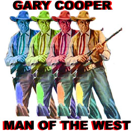
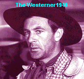
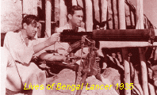
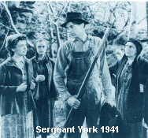

| Gary Cooper
(1901 -1961) 
 Gary Cooper made it look effortless. Whether
brandishing a gun with uncompromised determination or swinging a bat as baseball great Lou Gehrig,
the tall, lanky native of Montana was convincing without overacting.
The matinee idol had a reputation as one of Hollywood's consummate
lotharios. Off screen affairs bolstered his on-screen stock. Actress Sandra Shaw and Cooper were
married in 1933 and the couple remained husband and wife until the lanky movie star's untimely
death in 1961. Cooper was paired with some of the most beautiful leading ladies of his time. From
silent star Clara Bow to charming gamin Audrey Hepburn, directors looked to Gary Cooper to provide
sexual movie chemistry. His leading ladies read like a screen siren list: Marlene Dietrich, Joan
Crawford, Carole Lombard, Jean Arthur, Claudette Colbert, Merle Oberon, Barbara Stanwyck, Ingrid
Bergman, Paulette Goddard, Loretta Young, Ann Sheridan, Lauren Bacall, Grace Kelly, Susan Hayward,
and Rita Hayworth.
Amongst Cooper's most memorable roles is the shy, somewhat pixilated, Lancelot
Deeds in Mr. Deeds Goes to Town (1936). Cooper's gawky innocence captured the purity of
Capra's vision. Capra teamed with Cooper again in the underrated Meet John Doe (1941).
Cooper and costar Barbara Stanwyck had great chemistry, and once again, Cooper's screen aura of
innocence was just what director Capra needed to nail home his social commentary. Cooper was ideal
to deliver wistful Capraesque lines like: "There's something about the spirit of Christmas.
what it does to people, all kinds of people. Now why can't that spirit, that same warm Christmas
spirit, last the whole year round?"
 Capra wasn't the only director who knew a good thing
when he saw it. William Wyler went to the Cooper well twice. "You know how it looks just
before the sun sets? You can look out and that water ain't exactly blue and it ain't exactly
purple--it's a sort of color a man can feel but he can't put a name to. That's tough guy Cole
Hardin waxing rhapsodic to Judge Roy Bean in Wyler's great 1940 western classic The Westerner (1940).
Lilly Langtry must still be listening somewhere. Sixteen years later Wyler picked Cooper as the
patriarch in the fine civil war drama Friendly Persuasion (1956). Howard Hawks first
cast Cooper in the 1933 Today We Live, a William Faulkner story tailored to fit Joan
Crawford. It pretty much sunk. Hawks cast Cooper twice in 1941. The delightful Ball of Fire
plays up to Cooper innocence again as he portrays Professor Bertram Potts, the youngest of a team
of closeted researchers devoting themselves to a new encyclopedia. Fast lady on the lam Sugarpuss
O'Shea roils into their quarters for a volume of laughs. Barbara Stanwyck snaps the wisecracks as
Cooper is smitten. 1941 was a great year for Gary Cooper.  But it was with Hawks' Sergeant York that
Cooper could display his masculine charms, his innocence and his manhood at the same time. Cooper
received his first Academy Award© as Best Actor playing Alvin York, who received the Congressional
Medal of Honor in recognition of his valor. One good award deserves another so to speak.
In the thirties and forties Gary Cooper's star was one of the brightest in the
Hollywood firmament. In action films like The Lives of a Bengal Lancer (1935), directed by
Henry Hathaway, and Beau Geste (1939), directed by William Wellman Cooper flexed his movie
star muscles in grand style, capturing the devil may care attitude of his characters with manly
ease. Cooper was directed by Hathaway in seven films. Sam Wood directed Cooper is four films,
including the memorable Pride of the Yankees (1942).
Cooper rarely altered the halted, steady, pattern of his speech. His monotone
deep voice spelled out dependable. Playing it for laughs in Ball of Fire (1941) or Love
in the Afternoon (1957), facing up to the bad guys in High Noon, or staring down
Burt Lancaster in Vera Cruz, from the his famous line in The Virginian (1929),
"Smile when you say that," to the signature "yup" instead of yes, Gary Cooper
stood tall amongst his peers.
In 1952, the laconic Cooper was presented with his second Academy Award©
as Best Actor for the role of marshal Will Kane in High Noon. Kane, on the day of his
wedding and retirement, must face down killers out for revenge against the marshal. Looking to the
townsfolk for help, Kane retains his dignity while let down at every turn. Cooper staunch, clipped
style matches perfectly with pragmatic Kane.
Above all, Cooper will always be remembered as a man of the west. He
carried his six guns to two Academy Awards©, but thrilled audiences in more than twenty westerns.
Click on the thumbnails for larger
images
|
|
|

The Feature Archive
has articles ranging from Akira
Kurosawa to Blonde Bimbos.

Click on the image above for a "dream interview" with director John Ford.

Annie Get Your Gun/A,A-
Irving Berlin's brilliant musical gem is polished and preserved on this Warner DVD release. An
explosion of music, song, dance and color.


ISF Monitor Calibrations in the
Tristate New York area. Lots of hardware info and frequent hardware peaks from video expert Kevin
Miller.
 Brad
Lang continues to add more interesting material to the extensive collection at
Classic
Movies. Everything from actors and actress to your favorite directors is
linked at the site. Brad
Lang continues to add more interesting material to the extensive collection at
Classic
Movies. Everything from actors and actress to your favorite directors is
linked at the site.

An elegantly presented fan site dedicated to one of Hollywood's great action stars.

Films of the Golden Age is
a showcase for special feature articles on film
people and Hollywood history, all illustrated with beautiful photographs and classic movie art.

Classic Images on classic films, featuring news, reviews, obituaries, film convention reports,
and detailed articles on film people, from the most famous to the most obscure
Bruce Hershenson Move Posters

Bruce Hershenson has been running
successful movie poster auctions for a number of years, most notably for Christies. His site
includes many images and a huge variety of posters for sales from his periodic
catalogs.
Choko
Movie Posters

The popular Paris movie poster store
makes it's way to the Internet with an outstanding selection of French Movie Posters. Many
beautiful images on display in a searchable data base.

The home of John Tisch's invaluable Poster Price Almanac. Every serious poster collector
uses the Almanac as a reference.
 A huge
selection of French movie posters with images galore. Don't miss this site if you ate interested in
lovely French posters. A huge
selection of French movie posters with images galore. Don't miss this site if you ate interested in
lovely French posters.

Now a major independent DVD distributor, Image has parlayed its laser disc business
to success. Great DVD release calendar info.

The Cinema Laser
A home grown magazine for laserphiles that has been publishing for a number of years and has
embraced DVD in a big way. Lots of helpful information.
|